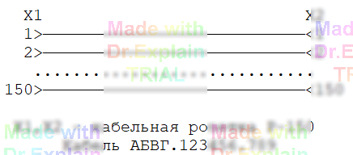

2.1 Схема проверяемого кабеля
В этом разделе показан пример проверки кабеля, задача которой — убедиться в целостности (непрерывности) всех его цепей и в достаточной изоляции между различными цепями кабеля. Схематично кабель изображён ниже на рисунке:

Полный текст программы проверки, реализующей контроль цепей и изоляции для приведённой схемы, приведён в Приложении В.